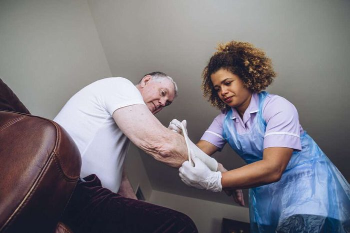

Registered Nurses
For assessment, IV therapy, complex wounds, care planning and anything requiring clinical judgement about whether something is going wrong.
Dressings changed, IV therapy run, catheters managed, medications set up and checked — carried out at the kitchen table instead of in a waiting room. We have been providing nursing care across the Lower Mainland since 2005.
These are procedures that normally mean a clinic visit, an outpatient appointment or an extra week on a ward. Done at home, they cost less and recover better — and for someone with limited mobility, they may be the only realistic option.
Surgical wounds, pressure injuries, diabetic ulcers and slow-healing wounds. Assessed at each visit, dressed to the plan, and escalated if it is not progressing as it should.
Intravenous antibiotics, hydration and prescribed infusions, plus scheduled injections. Line sites checked at every visit.
Routine changes, flushing, stoma care and appliance changes — and teaching the family to manage confidently between visits.
Blister packs and dosettes prepared and checked, timings organised, and the whole list reviewed when someone is on eight or nine different drugs.
Blood glucose monitoring, insulin administration, and nail and foot care for feet that must not be left to a family member with clippers.
The first fortnight after an operation: drains, dressings, pain control, mobility and spotting an infection before it becomes a readmission.
Symptom and pain management at home, working alongside the palliative team, so someone can stay where they want to be.
A nurse visits, assesses properly, and writes a plan you can actually read — including what should trigger a call to the GP.
Most families do not phone asking for "wound care". They phone because of what happened. These are the situations we are most often called into.
Hospitals discharge on their timetable, not the family's. The period that follows is where most avoidable readmissions begin — a dressing left too long, a medication list that changed on the ward and nobody explained, a drain nobody is confident touching.
We can put a nurse in the home for that stretch specifically: daily at first, then tapering as the person steadies. Short arrangements are completely normal, and we would rather do two weeks well than sign you up to something open-ended.

Home nursing is intimate work in somebody's own house. Who arrives matters as much as what they are qualified to do.
For assessment, IV therapy, complex wounds, care planning and anything requiring clinical judgement about whether something is going wrong.
For routine dressings, medication administration, catheter care and ongoing monitoring within an established plan.
For the personal care, meals, mobility and company that surround the clinical work — usually the larger share of the week.
Not to speak to us or to arrange an assessment. Some specific procedures need a physician's order — IV antibiotics, for instance — and we will tell you exactly what is needed for your situation rather than leaving you to guess.
Vancouver Coastal Health and Fraser Health provide publicly funded home health nursing following an assessment, with visits allocated according to need. We are private: you decide the frequency and timing, there is no waiting list, and you pay directly. Many families use both.
Often within 24 to 48 hours, and sooner where a discharge date is driving it. Tell us the date on the first call and we will work back from it.
A single visit is fine — a one-off dressing change, an assessment, or teaching a family member to manage something themselves. There is no requirement to commit to a schedule.
Vancouver, Burnaby, Richmond, North and West Vancouver, New Westminster, Coquitlam, Port Moody, Port Coquitlam, Surrey, Langley, Maple Ridge and White Rock.
Sometimes. Private nursing is covered by some extended health policies, long-term care insurance, ICBC and WorkSafeBC claims, and the Veterans Independence Program. Worth checking your policy before assuming it is not.
Leave your details and a nurse will call you back to talk it through. If it is urgent, phone — the line is answered around the clock.
Home Care Nursing and Home Care Vancouver are run by the same team, on the same phone line.